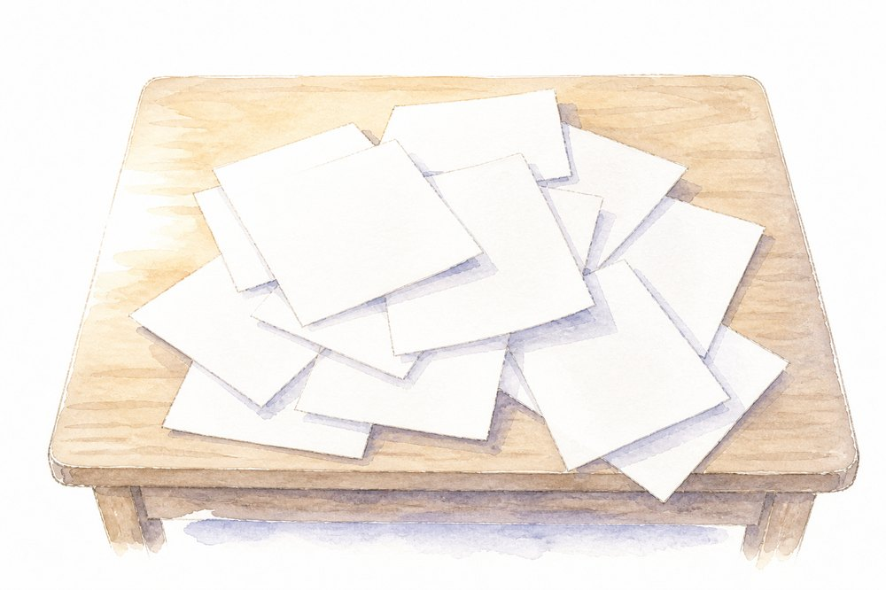
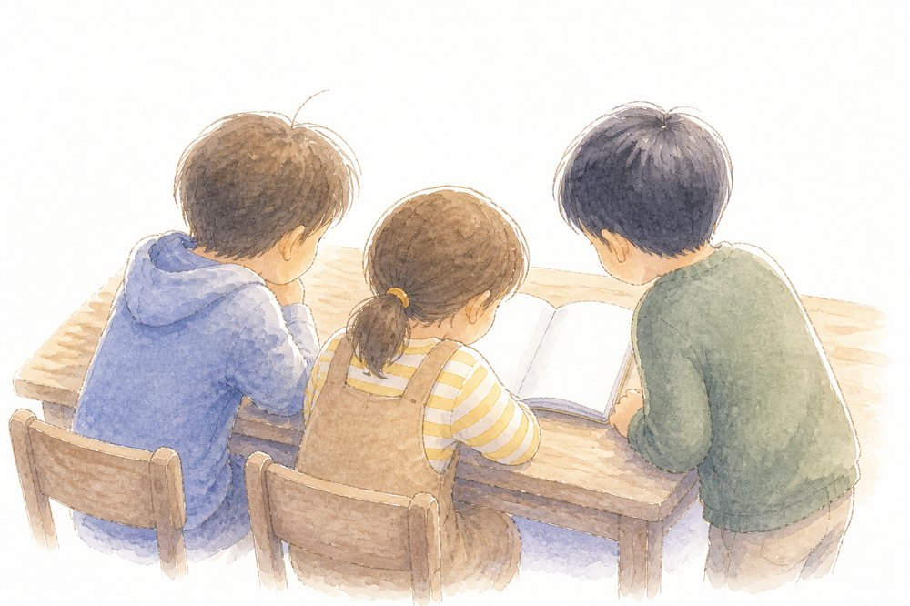
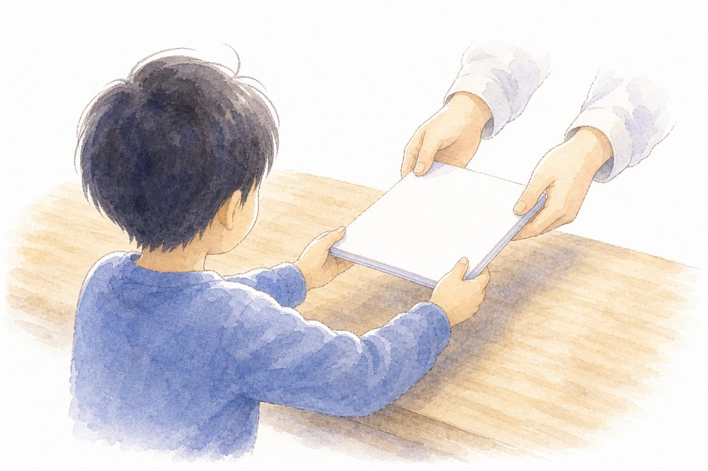

研修で出てくる道具を、辞書のように引けるページです。AIの2つ（Gemini・NotebookLM）と、Workspaceの各ツールをMicrosoftとの違いから、そして土台になる「クラウド」と「共有の権限」の考え方を、図とイラストでまとめました。研修のあと、忘れたらここに戻ってください。
Microsoft は「ファイルを作って・保存して・送る」。Google は「クラウドに置いた1つを・みんなで共有する」。ここが分かると、あとのツールはぜんぶ同じ理屈です。


クラウドの心臓は「共有」です。相手に渡す権限を、見るだけ（閲覧者）→ 提案できる（コメント可）→ 直せる（編集者）から選び、渡す範囲を「特定の人だけ」か「リンクを知っている全員」で決めます。

| やりたいこと | Microsoft | |
|---|---|---|
| 文書を書く | ドキュメント | Word |
| 表計算 | スプレッドシート | Excel |
| スライド | スライド | PowerPoint |
| アンケート・小テスト | フォーム | Forms |
| ファイル保存 | ドライブ | OneDrive |
| クラス運営 | Classroom | Teams |
本研修の主役。文章・案・下書きを対話で作る生成AI。前提を覚えさせる「Gem」もここで。
手元の資料を読み込ませて、そこからだけ答えさせる道具。根拠を示すので確認しやすい。進路資料に。
〔 〕差し替え式の型の棚。仕事系・教科系のプロンプトを選んでコピーして使う。
Word と同じ「文書を書く」道具。いちばんの違いは、保存して送るのではなく、クラウドに置い…
Excel と同じ「表計算」。式や関数もほぼ同じ。強みは、みんなで同時に入力でき、変更がその…
PowerPoint と同じ「スライド」。凝った演出は PowerPoint が得意。班で1…
アンケートや小テストをつくる道具。先生にいちばん効くのはこれ。選択問題は自動採点、回答は自動…
課題の配布・提出・返却をまとめる「授業の教室」。チャットや会議まで含む総合が Teams、授…
ファイルをしまう「クラウドの保管庫」。考え方は OneDrive と同じ。フォルダやファイル…